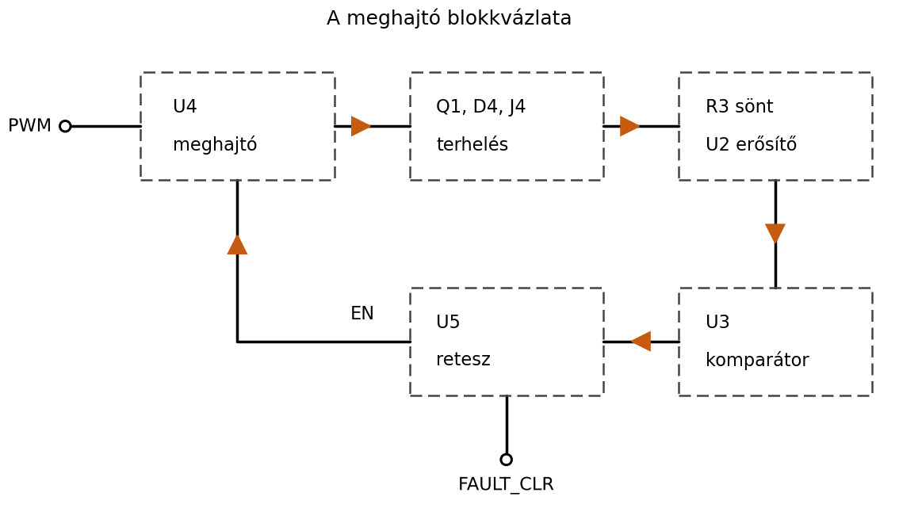
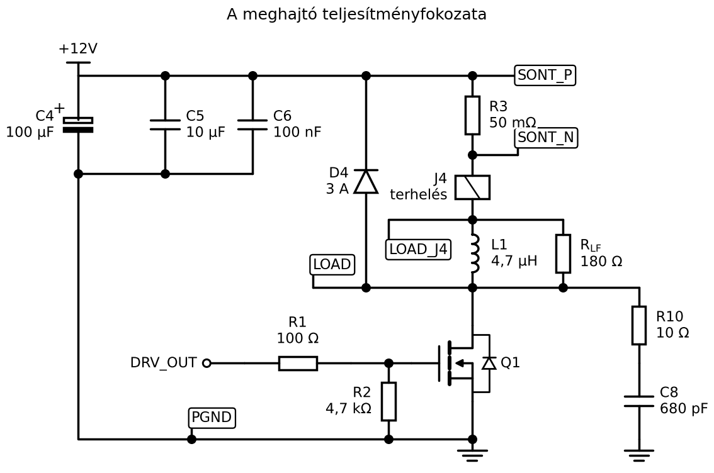
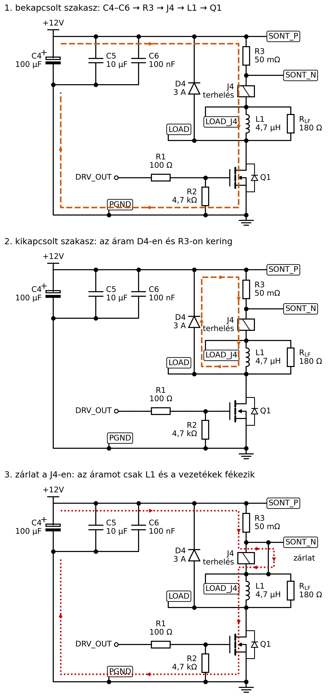
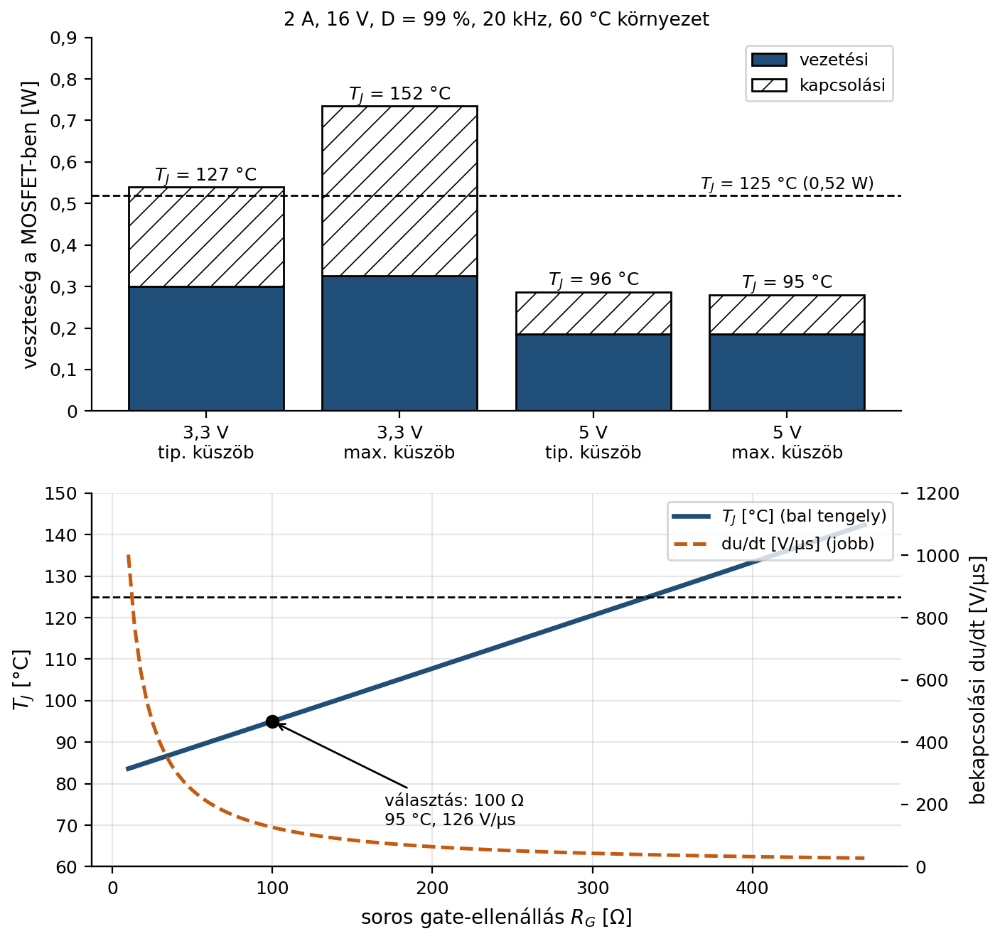
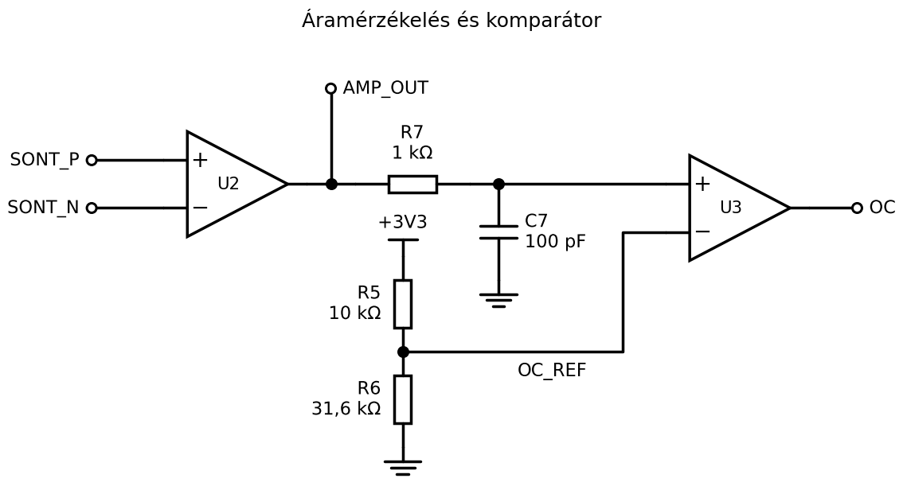
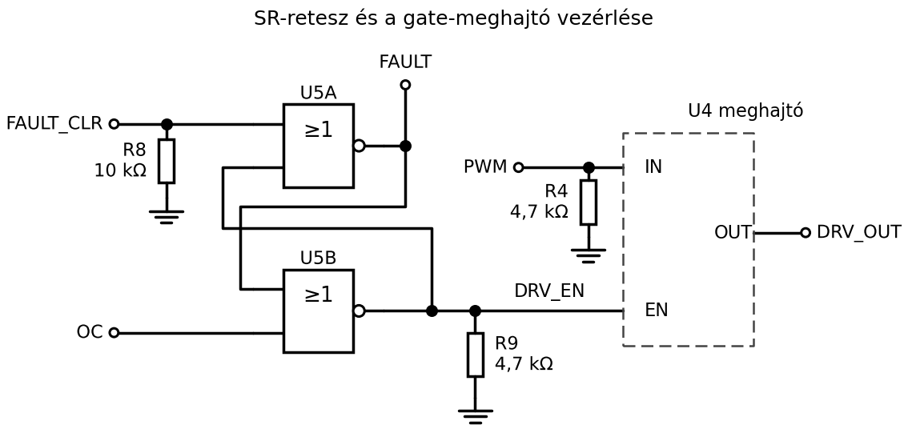
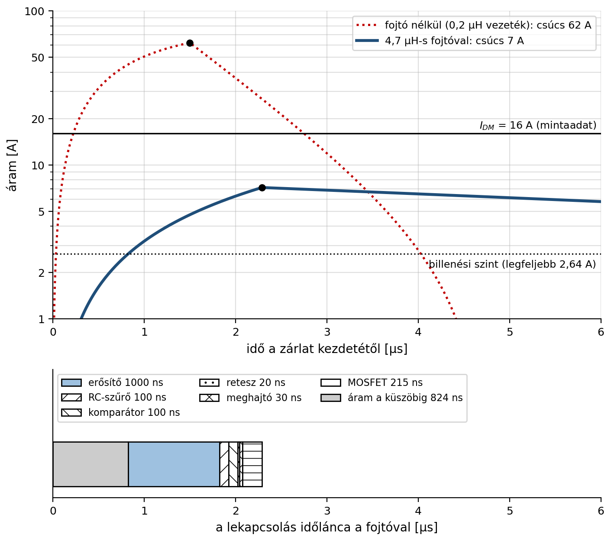

Ebben a projektben a szenzormodul teljesítménykapcsolóját tervezzük meg a J4 csatlakozóra: egy mikrovezérlő PWM-jelével (impulzusszélesség-moduláció: állandó frekvencia, változó kitöltés) vezérelt, védett MOSFET-meghajtót egy szolenoidhoz vagy kis egyenáramú motorhoz. A végén:
Építünk A BJT mint kapcsoló, a MOSFET kapcsolóként: low-side és high-side, a Kapcsolási folyamat: gate-töltés, Miller-plató és meghajtás, a Biztonságos működési tartomány, lavina és induktív terhelés, a Mikrovezérlő GPIO illesztése terhelésekhez, a Hőtervezés és vezetőmelegedés, a Földelési stratégiák és visszatérő áramutak és a VIII. rész folyamat-alfejezeteinek eredményeire. A tápellátást az 1. záróprojekt: védett tápegység 12 V-ról 5 V-ra és 3,3 V-ra adja: +12V (védett), +5V és +3V3 sín. Az alkatrészjelölők projektenként saját listát alkotnak (itt C4 vagy D4 nem azonos az 1. projekt azonos jelű elemével). Minden alkatrészadat mintaadat.
A szolenoid 12 Ω-os, 20 mH-s tekercs: a mikrovezérlő lába 8 mA-t ad, a tekercs 1 A-t kér. Egy MOSFET és egy dióda látszólag elég. A projekt azt mutatja meg, mi történik, ha a terhelés vezetéke zárlatos, ha reset alatt felhúzás kerül a vezérlőlábra, vagy ha a MOSFET küszöbe a tűrés felső szélén van – és hogyan derül ki ez még a rajzasztalon.
A meghajtó két hurok. Az első a teljesítményhurok: energia a +12V-ról a tekercsbe, majd kikapcsoláskor a tekercs árama a szabadonfutó diódán kering tovább, mert az induktivitás árama nem ugorhat. A második a védelmi hurok: a sönt méri az áramot, egy komparátor figyeli, és ha az túl nagy, egy retesz letiltja a meghajtót – firmware nélkül, mikroszekundumok alatt.

A szenzormodul listájából ide tartozik a K-02 (12 V-os induktív terhelés 20 kHz-es PWM-mel, 0…100 %, 9…16 V, legfeljebb 2 A), a K-06 (30 V-os tesztimpulzus), a K-11 (−20…60 °C, 25 K záróréteg-tartalék) és a K-04 (bemeneti áram a biztosíték határa alatt). Az Követelményektől a blokkdiagramig módján három projektkövetelmény jön hozzá:
| Jel | Követelmény | Mérhető feltétel |
|---|---|---|
| K-19 | hardveres túláramvédelem | 2,2…3,0 A között billen firmware nélkül, és reteszelve marad |
| K-20 | zárlat a J4 két kivezetése között | a MOSFET árama a 16 A-es impulzushatár (mintaadat) alatt marad |
| K-21 | reset és tápfutás | a terhelés kikapcsolva; a meghajtó bemenete legfeljebb 0,8 V |
A legrosszabb terhelés: 16 V-on, −20 °C-on a réztekercs , az áram A. A J4 névleges árama 2 A, ezért a meghajtót 2 A-re méretezzük. A bemeneti mérleg (K-04) viszont ennél kevesebbet enged: ezt az ütközést az átvizsgálás tárja fel, és a végén a K-02 módosul (D-07).
Low-side vagy high-side? A MOSFET kapcsolóként: low-side és high-side táblázata alapján:
A sönt a D-03 döntés szerint a terhelés pozitív ágában van, a szabadonfutó dióda katódja pedig a sönt előtt, a +12V-on. Így (1) a sönt a kikapcsolt szakaszban is méri a tekercsáramot, (2) a sönt két kivezetése a PWM élein is a +12V közelében marad, tehát az erősítőt nem éri 20 kHz-es közös módusú ugrás, és (3) – ahogy mindjárt látjuk – a sönt és a kábel kimarad a gyorsan váltó hurokból.


Az ábrán kövesd a 2. útvonalat: a tekercs árama a D4-en visszajut a +12V-ra, a sönt elé, és a söntön át folytatódik. Ami a két szakasz között hirtelen vált, az csak a Q1 és a D4 ága a mögöttük lévő C5/C6-tal: ez a forró hurok (Q1 – D4 – kondenzátorok – PGND). A sönt, a J4 kábele és az L1 árama mindkét szakaszban ugyanaz, majdnem egyenáram. Ez lesz a legfontosabb elrendezési kényszer.
A modul D-04 döntése (Követelményektől a blokkdiagramig) még a GPIO-ról vagy 3,3 V-os logikáról, 100 Ω-mal hajtotta volna a gate-et. A garantált 2,5 V-on rendben van, de a kapcsolási idő a Miller-platótól függ, és a „garantált értékre tervezz” elv a küszöbre is vonatkozik: a legnagyobb küszöbű MN1-nél ( = 1,4 V) a plató 2 A-nél kb. V. A nevezőjében ez dönt.
Legrosszabb pont: 2 A állandó áram, 16 V, = 99 %, 20 kHz, 60 °C.
| 3,3 V-os logika | 5 V-os meghajtó (U4) | |
|---|---|---|
| , | 3,13 V; 125 Ω | 4,85 V; 103 Ω |
| plató ideje | ns | ns |
| 1,28 µs | 297 ns | |
| 408 mW | 95 mW | |
| 327 mW (50 mΩ) | 185 mW (35 mΩ) | |
| 152 °C | 95 °C |
A vezetési tagban a hőfokfüggés a számított -hez tartozik (a kód iterál). A 3,3 V-os változat már tipikus küszöbbel is 127 °C, tehát nem felel meg a 125 °C-os határnak. A döntés (D-04 módosítása): 5 V-os meghajtó IC (U4), engedélyező (EN) bemenettel, amelyet a védelem tilt le. A 100 Ω-os soros ellenállás marad.

A görbéje a csereüzlet: 22 Ω-mal 85 °C és 520 V/µs, 100 Ω-mal 95 °C és 126 V/µs, 470 Ω-mal 142 °C. A lassabb él kevesebb zavart ad, de melegít; 100 Ω a kompromisszum, és méréssel finomítható (Hatásfok, veszteségek, alkatrészválasztás és kapcsolóüzemű zaj). A meghajtó csúcsárama mA, a meghajtás teljesítménye mW.
Drain-csúcs. A 30 V-os impulzus idején V, a 80 %-os 32 V alatt (a 20 nH-s forró hurok és a 68 ns-os áramesés becslés). Az 1. záróprojekt védőlánca mögött a sín ennél az impulzusnál csak kb. 21 V, a 30 V-os ellenőrzés tehát óvatos tartalék.
SOA. A kapcsolási átmenetben a MOSFET egyszerre visel feszültséget és áramot, de csak kb. 0,15 µs-ig. A legrövidebb mintagörbe 100 µs-os; még ez is 3,9 A-t enged 16 V-on = 60 °C-nál (100 °C-nál 2,2 A-t), tehát a 2 A rendben van. A 30 V-os impulzus alatti kapcsolást a 100 µs-os görbe nem fedi le; a rövidebb impulzusokra vonatkozó adatot a kiválasztott típus adatlapjából kell igazolni (NY-07).
Biztonságos működési tartomány, lavina és induktív terhelés óta tudjuk, hogy a magasabb fogófeszültség gyorsabban üríti a tekercset. PWM-ben ez hátrány. Gondolkodj előre: 12 V-ról, = 50 %-nál mekkora a szolenoid árama, ha a kikapcsolt szakaszban a fogóág 15,5 V ellenfeszültséget ad?
Közel nulla: a bekapcsolt fél periódusban 12 V növeli, a másikban 15,5 V csökkenti az áramot, ezért minden periódusban visszaesik nullára (átlag 7 mA a diódás 476 mA helyett). = 90 %-nál az áram megmarad, de a Zenerrel 1,2 W, a 36 V-os TVS-sel 2,5 W hő keletkezik. A PWM-es üzemhez szabadonfutó dióda kell.
A szinkron (aktív) szabadonfutás – a dióda helyett egy felső MOSFET – = 50 %-nál a fogóveszteséget 119 mW-ról 5 mW-ra csökkentené, de bootstrap-meghajtó, holtidő és keresztvezetés elleni reteszelés kell hozzá. A nyereség nem indokolja: marad a dióda.
D4 mérete. A J4 2 A-es névleges terhelése motor is lehet, amelynek árama kis kitöltésnél is megmarad. Legrosszabb eset = 5 %: W, °C. A Kapcsolási rajz konvenciói és a NYÁK-tervezőnek átadott kényszerek rajzán szereplő 2 A-es DS1 átlagárama itt 1,9 A lenne, a 70 %-os derating (1,4 A) fölött; D4 ezért 3 A-es Schottky. Ez akkor is indokolt, ha a J4 folyamatos árama végül 1,62 A-re korlátozódik (D-07, lásd az átvizsgálást): akkor 1,54 A lenne az átlag, még mindig 1,4 A fölött. A végső lekapcsoláskor a szolenoid árama diódával 4,8 ms alatt fogy el; ha a feladat gyorsabbat kérne, a Zener ágat egy külön kapcsolóval kellene a PWM alatt áthidalni – ilyen követelmény nincs.
A sönt 2 A-nél W-ot ad le, az 1 W-os alkatrész 20 %-a. Az U2 magas oldali árammérő erősítő ( = 20, tehát 1 V/A, 400 kHz sávszélesség, mintaadat) kimenete (AMP_OUT; ugyanaz a fokozat, mint a 2. záróprojekt árammérő erősítője) két helyre megy: a 2. záróprojekt: érzékelő-illesztő és mérőlánc antialiasing szűrőjén át az ADC-be, és szűrő előtt az U3 komparátorra. A szűrő ugrásválasza kb. 200 µs: ennyi idő alatt a zárlati áram fojtóval is megközelítené a hurok ellenállása által megengedett, kb. 80 A-es értéket.

A referencia V, a billenési áram tehát 2,51 A. A tűrés a billenési pontra vonatkozik: a Derating, tűrésanalízis és megbízhatóság módszerével a 3V3 sín ±2 %-a, a sönt, az erősítő offsetje és erősítése, a közös módus és a komparátor ±5 mV-os offsetje együtt legrosszabb esetben 2,37…2,64 A (RSS: ±64 mA). A domináns tag a 3,3 V-os sín (a négyzetes összeg 62 %-a). A K-19 2,2…3,0 A-es ablaka teljesül, és a 2 A-es üzemi maximum alatt a védelem nem billen; a 2. záróprojekt pontos referenciája szűkíthetné a sávot, de nincs rá szükség, és a védelem így nem függ a mérőlánctól. Az R7–C7 (100 ns) a kapcsolási tüskéket veszi le. Az erősítőnek nagy áramugrásra legfeljebb 1 µs alatt el kell érnie a billenési szintet (a 2. záróprojekt ML-04 követelménye): ez a típusválasztás feltétele.
Ha a komparátor csak „addig tiltana, amíg az áram nagy”, a meghajtó a küszöb körül gyorsan ki-be kapcsolna, és a zárlat tartós fűtést jelentene. Ezért reteszelő (latch) kell: olyan tárolóelem, amely a billenést megőrzi, amíg a mikrovezérlő nem törli. Két, keresztbe kötött NOR-kapu (a kimenetük csak akkor magas, ha egyik bemenet sem az) pontosan ezt tudja:

| OC (S) | FAULT_CLR (R) | DRV_EN | FAULT |
|---|---|---|---|
| 1 | 0 | 0 | 1 |
| 0 | 0 | megtartja | megtartja |
| 0 | 1 | 1 | 0 |
| 1 | 1 | 0 | 0 |
Az utolsó sor biztonságos (tiltott), de a FAULT ilyenkor nem jelez: a firmware csak rövid törlőimpulzust adjon. Reset és tápfutás (K-21): R4 a meghajtó bemenetét a belső felhúzóval (legalább 25 kΩ) szemben is V-on tartja, R9 +3V3 nélkül is tiltja a meghajtót, R2 pedig tápolatlan meghajtónál is lehúzza a gate-et.
A komparátor átbillenése és az áram megszakadása között idő telik el: erősítő 1 µs, RC 100 ns, komparátor 100 ns, retesz 20 ns, meghajtó 30 ns, MOSFET-kikapcsolás 215 ns – együtt = 1,46 µs (mintaadatok). Ez alatt az áramot csak a zárlati hurok induktivitása fékezi: . A J4-nél keletkező zárlat 0,2 µH-s vezetéke 80 A/µs-ot ad; a szimuláció szerint 62 A a csúcs, az = 16 A négyszerese. A megoldás a J4 ágba tett L1 = 4,7 µH fojtó:
Szavakban: a csúcs a billenési szint plusz annyi, amennyit az áram a késleltetés alatt még nőni tud. Az exponenciális modell 7,1 A-t ad: K-20 teljesül. A fojtó csak akkor véd, ha nem telítődik: követelmény A, effektív áram legalább 2,9 A, DCR 20 mΩ (80 mW). A fojtó a kábel 150 pF körüli kapacitásával 6 MHz-es rezgőkört alkot, ezt a párhuzamos 180 Ω csillapítja (). Megszakításkor a fojtó 125 µJ energiája a D4-en a +12V-ra jut, a MOSFET záróréteg-emelkedése a legfeljebb 7 A-es impulzusra néhány kelvin.

A forró hurok kondenzátora szállítja a váltakozó áramot. Legrosszabb esetben ( = 0,5, 2 A) az effektív érték A; a C4 1,5 A-es hullámárama mellett ez 70 % alatt van. A C4–C6 (kb. 110 µF) az 1. záróprojekt: védett tápegység 12 V-ról 5 V-ra és 3,3 V-ra lágyindítóját is terheli. Az ottani 636 µF-os modell ezt már tartalmazza: a lágyindító kapcsoló SOA-ját és melegedését ezzel együtt igazoltuk, és emiatt lett a gate-ellenállása 150 kΩ (TP-D4). Ha a meghajtó kondenzátorai nőnek, ezt a számítást meg kell ismételni.
A hullámosság V ( = 107 µF a C5 tényleges értékével). A drain-csomópont ( + D4 ≈ 240 pF) és a 20 nH-s hurok 73 MHz-en, 9 Ω hullámimpedanciával rezonál. A 68 ns-os él ennél jóval lassabb, ezért alig gerjeszti; a rajzon a 10 Ω + 680 pF-os snubber (RC-csillapító tag, Biztonságos működési tartomány, lavina és induktív terhelés) beültetetlen (DNP) hely, amelyet mérés alapján töltenek fel.
A LOAD vezeték áthallása a Csatolási mechanizmusok és áthallás becslésével: 2 pF csatoláson, 126 V/µs mellett egy szűretlen 5 kΩ-os csomópontra V jut; a 100 nF-os NTC-szűrővel a kapacitív osztó mV. Ezért a LOAD kerüli a mérővezetékeket, és minden érzékeny bemenet szűrt.
A számítások az elkit.extra_elch25b modulban vannak (a
gyökérből futtatva):
from elkit import extra_elch25b as m
for o in m.gate_options():
print(f"{o.name:<26} t_r+t_f = {(o.t_r + o.t_f) * 1e9:5.0f} ns "
f"P = {o.p_total * 1000:3.0f} mW T_J = {o.t_j:3.0f} °C")3,3 V-os logika, U_th tip t_r+t_f = 748 ns P = 540 mW T_J = 127 °C
5 V-os meghajtó, U_th tip t_r+t_f = 316 ns P = 287 mW T_J = 96 °C
3,3 V-os logika, U_th max t_r+t_f = 1275 ns P = 735 mW T_J = 152 °C
5 V-os meghajtó, U_th max t_r+t_f = 297 ns P = 280 mW T_J = 95 °Cfor md in m.CLAMP_MODES:
a, b = m.pwm_steady(0.5, mode=md), m.pwm_steady(0.9, mode=md)
print(f"{md:<12} D=0.5: {a.i_avg * 1000:4.0f} mA | D=0.9: {b.i_avg * 1000:4.0f} mA, "
f"fogó {b.p_clamp:4.2f} W")
w, r = m.trip_budget()
print(f"billenés: {w.minimum:.2f} … {w.maximum:.2f} A (RSS ±{r.half_width * 1000:.0f} mA)")
for L in (m.L_F, 0.0):
sc = m.short_circuit(L)
print(f"L1 = {L * 1e6:3.1f} µH: csúcs {sc.i_peak:5.1f} A, {sc.t_off * 1e6:4.2f} µs-nál")dióda D=0.5: 476 mA | D=0.9: 888 mA, fogó 0.04 W
dióda+zener D=0.5: 7 mA | D=0.9: 764 mA, fogó 1.18 W
tvs D=0.5: 6 mA | D=0.9: 694 mA, fogó 2.50 W
szinkron D=0.5: 495 mA | D=0.9: 892 mA, fogó 0.00 W
billenés: 2.37 … 2.64 A (RSS ±64 mA)
L1 = 4.7 µH: csúcs 7.1 A, 2.29 µs-nál
L1 = 0.0 µH: csúcs 62.1 A, 1.50 µs-nálA jegyzőkönyv sorai és az átvizsgálás megállapításai:
from elkit import extra_elch24 as x, review
print(x.format_records(m.records()))
print(review.format_findings(m.findings()))
ok, why = x.handover(m.findings(), review.HANDOVER, m.QUESTIONS)
print("átadható:", ok, why)jel mennyiség érték határ eredmény köv.
SIM-41 szolenoidáram, 16 V, -20 °C 1.6 A ≤ 1.62 A rendben K-02
SZM-49 bemeneti áram, J4 = 1,62 A 1.85 A ≤ 1.88 A rendben K-04
SZM-41 drain-csúcs 30 V-os impulzusnál 31.1 V ≤ 32 V rendben K-02,K-06
SZM-42 MOSFET záróréteg, legrosszabb 95 °C ≤ 125 °C rendben K-02,K-11
SZM-43 D4 záróréteg, 2 A, D = 5 % 108 °C ≤ 125 °C rendben K-11
SZM-44 sönt disszipációja 2 A-nél 200 mW ≤ 500 mW rendben K-02
SZM-45 billenési áram alsó határa 2.37 A ≥ 2.2 A rendben K-19
SZM-46 billenési áram felső határa 2.64 A ≤ 3 A rendben K-19
SIM-42 rövidzár-csúcsáram J4-en 7.13 A ≤ 16 A rendben K-20
SZM-47 meghajtó-bemenet reset alatt 522 mV ≤ 800 mV rendben K-21
SZM-48 C4 hullámárama, D = 0,5, 2 A 1 A ≤ 1.05 A rendben K-02
kritikus L1 rövidzárnál az MN1 impulzusárama sokszorosan sérül [javítva: 4,7 µH fojtó, 180 Ω
csillapítás]
fontos D4 a DS1 (2 A) a 2 A-es J4-re kevés [javítva: 3 A-es Schottky]
fontos J4 2 A-es terhelésnél a bemenet 2,23 A > 1,875 A (K-04)
fontos R9 tápfutás alatt a meghajtó EN lába lebeg [javítva: 4,7 kΩ lehúzó az EN-en]
fontos U4 3,3 V-os meghajtás: T_J > 125 °C a legnagyobb küszöbbel [javítva: 5 V-os
meghajtó]
ajánlott J4.1 J4.1–GND zárlatot Q1 nem szakít meg, csak F1 [elfogadva: dokumentálva; F1 I²t
igazolása: NY-06]
összesen: 1 kritikus, 4 fontos, 1 ajánlott
átadható: False ['1 nyitott fontos megállapítás', 'blokkoló nyitott kérdés: NY-05']A jegyzőkönyv minden sora rendben van, a csomag mégsem adható át: a J4 sor nyitott, és a NY-05 kérdés blokkoló. Négy megállapítást a rajz módosításával lezártunk, a J4.1–GND zárlatot (Q1 nem szakíthatja meg) indokolva elfogadtuk: az az F1 biztosíték feladata, igazolása NY-06.
Két követelmény ütközése nem számítási hiba: valakinek dönteni kell. A tervező dolga, hogy a döntés mindkét ágát számokkal tegye a megrendelő elé:
| A) a J4 korlátozása | B) a 2 A-es J4 megtartása | |
|---|---|---|
| bemeneti áram | 1,85 A ≤ 1,875 A | 2,23 A |
| F1 | marad (2,5 A) | legalább A → 3,15 A |
| adapter | 12 V / 2 A marad | legalább 3 A-es |
| FB1 (1. projekt) | 62 % | % > 70 %: nagyobb gyöngy |
| további vizsgálat | J4 felirata és kézikönyv | F1 , vezetékek, J1, C4, Q1, Q2 hő és SOA |
A példánkban a megrendelő a szolenoidon kívül mást nem köt a J4-re, és írásban az A változatot fogadja el. D-07: a K-02 B kiadása – „a J4 folyamatos árama legfeljebb 1,62 A”; a teljesítményfokozat (D4, sönt, L1, rézkeresztmetszetek) 2 A-es méretezési tartalékkal marad. A korlátot a rajzon, a J4 mellett és a kezelési leírásban is rögzíteni kell, mert a védelem (2,37 A-től) egy 2 A-es terhelést nem kapcsol le. A módosítás után a jegyzőkönyv érintett sorait (SIM-41, SZM-49) újra lefuttatjuk, és az átvizsgálást lezárjuk:
from elkit import extra_elch25a as p
for d in m.DECISIONS:
print(d.id, d.text)
for i_j4 in (m.J4_I_MAX, 2.0):
i_be = m.load_total_current(i_j4)
print(f"J4 = {i_j4:.2f} A: bemenet {i_be:.3f} A, F1 legalább {i_be / 0.75:.2f} A, "
f"FB120 {i_be / p.I_FB120:.0%}")
nyitott = [q for q in m.QUESTIONS if q.id != "NY-05"]
ok, why = x.handover(m.findings(customer_answer=True), review.HANDOVER, nyitott)
print("átadható:", ok, "| nyitott, nem blokkoló:", ", ".join(q.id for q in nyitott))D-04 alsó oldali MN1, 5 V-os gate-meghajtó EN-nel, 100 Ω, 4,7 kΩ lehúzók
D-07 K-02 B kiadás: J4 folyamatos árama legfeljebb 1,62 A
J4 = 1.62 A: bemenet 1.849 A, F1 legalább 2.47 A, FB120 62%
J4 = 2.00 A: bemenet 2.229 A, F1 legalább 2.97 A, FB120 74%
átadható: True | nyitott, nem blokkoló: NY-06, NY-07A csomag így átadható; a NY-06 (F1 a J4.1–GND zárlatnál) és a NY-07 (a választott alkatrészek impulzusadatai) felelőssel és határidővel nyitva marad. A tanulság: az átadás akadálya itt nem a kapcsolás, hanem egy ütköző követelmény volt, és a lezárás egy dokumentált döntés – nem a számok „megigazítása”.
A kényszerlista (a teljes listát az m.constraints()
adja):
print(review.format_constraints(m.constraints()[:3]))TERHELES [nagyáramú]: LOAD, LOAD_J4
I_max = 2 A; U_max = 30 V
elhelyezés: forró hurok: Q1 – D4 – C5/C6 (+12V a D4 katódjánál) – PGND – Q1 source; L1 és R_LF
a J4 felé, a hurkon kívül
TAP_J4 [nagyáramú]: +12V
I_max = 2 A; U_max = 30 V
elhelyezés: C4, C5, C6 a D4 katódja és a Q1 source között; a sönt ezek UTÁN
SONT [érzékeny]: SONT_P, SONT_N
U_max = 30 V
elhelyezés: Kelvin-bekötés R3-on, érpárban az U2-höz; D4 katódja a SONT_P előttAz átadási csomaghoz tartozik még a BOM (jelölő, érték, tűrés, tok, feszültség- és áramadat, L1-nél a telítési áram, D4-nél az impulzusáram, Q1-nél az , második forrás), a modellek korlátaival együtt a számítási és szimulációs jegyzőkönyv, valamint az első bekapcsolás terve (Labortáp, áramkorlát és függvénygenerátor; opcionális, ha megépíted): (1) labortáp 12 V, 100 mA korláttal, terhelés nélkül: sínek, DRV_EN, a gate 0 V-on; (2) retesz törlése, PWM = 0; (3) szolenoid, 1,3 A korlát, PWM lassan felfelé; (4) billenéspróba zárlat nélkül: R6 ideiglenesen 1,78 kΩ, a küszöb 0,50 A, a védelemnek kb. 50 % kitöltés fölött kell lekapcsolnia; utána az eredeti érték vissza. Szándékos zárlati próbát ne végezz: az méretezett mérőkörnyezetben, szakember feladata.
| Tünet | Ok | Javítás |
|---|---|---|
| Bekapcsoláskor a terhelés rövid időre magától húz | nincs lehúzó a meghajtó bemenetén vagy EN-jén | R4, R9, R2; reset-állapot átvizsgálása |
| A MOSFET meleg környezetben tönkremegy | tipikus küszöbbel számolt kapcsolási idő | legnagyobb küszöb, meghajtó IC |
| A védelem zárlatban „nem elég gyors” | a komparátor a szűrt ADC-jelet figyeli | elágazás a szűrő előtt, soros induktivitás |
| A PWM-es szolenoid alig húz, a Zener forró | gyors fogás a PWM útjában | dióda a PWM alatt, Zener csak külön kapcsolva |
| A mért áram a kitöltéssel „ugrál” | a sönt a drain és a terhelés között van | sönt a +12V ágban, D4 katódja előtte |
Gyakori félreértés: „a sönt a rövidzárat is megoldja”. A sönt csak érzékel; a lekapcsolás ideje alatt az áramot a hurok impedanciája korlátozza.
gate_option
függvénnyel azt a legnagyobb E12 gate-ellenállást, amellyel az 5 V-os
meghajtó a legnagyobb küszöbű MN1-gyel 110 °C alatt marad.A low-side MOSFET-meghajtóban a sönt a pozitív ágban, a szabadonfutó dióda katódja előtte van, így az áram végig mérhető, a mérés nem ugrál, a forró hurok pedig csak Q1, D4 és a helyi kondenzátor. A gate-meghajtást a legnagyobb küszöb dönti el: 3,3 V-ról a veszteség 152 °C-ot, 5 V-os meghajtóval 95 °C-ot ad. PWM-ben dióda kell; Zener vagy TVS tönkreteszi az átvitelt. A reteszelt komparátoros védelem 2,37…2,64 A között billen, a 4,7 µH-s fojtó a zárlati csúcsot 7 A körül tartja. A K-02 és a K-04 ütközött (2 A-es J4-nél 2,23 A a bemeneten); a D-07 döntés a J4 folyamatos áramát 1,62 A-re korlátozta (K-02 B kiadás), és ezzel a csomag nem blokkoló kérdésekkel átadható.
Továbbvitt eredmény. A teljesítménykapcsoló tervezési sora (topológia → meghajtás a legnagyobb küszöbre → fogás → hő → védelem időlánccal → kényszerek → átvizsgálás) mintaként szolgál a Vegyes vizsgafeladatsor tervezési feladatához.
1. A (a lap 217 mA-t ad).
2. = 1,5 V: , kΩ → E96: 8,25 vagy 8,45 kΩ. A 8,25 kΩ 1,49 A-t ad (óvatosabb irány).
3. A < 16 A: a becslés szerint megfelel, de a tartalék kisebb, és a telítési követelmény ugyanígy áll.
4. W, °C > 125 °C: nem felel meg; kisebb hőellenállás (nagyobb rézfelület, más tok) kell.
5.
from elkit import eseries
jo = []
for rg in (v * d for d in (10, 100) for v in eseries.series_values("E12")):
if rg > 470:
break
o = m.gate_option("r", m.U_DR, rg + m.R_DR, m.MN1_LASSU)
if o.t_j <= 110:
jo.append((rg, o.t_j))
rg, tj = jo[-1]
print(f"R_G = {rg:g} Ω, T_J = {tj:.1f} °C")R_G = 180 Ω, T_J = 105.2 °C6. Ez a D-07-ben elvetett B változat: újra kell nyitni a D-07 döntést és a K-02-t. Érintett: a K-04 és a bemeneti lánc (F1 értéke és I²t-je, adapter, +12V vezetékek, FB1, a lágyindító); a motor indítási (álló) árama és a lágyindítás, mert a billenés 2,4 A-nél kezdődik; a billenési küszöb és a K-19 ablaka; D4 és L1 áramterhelhetősége és hője; Q1 -je folyamatos 2 A-nél; a C4 hullámárama; a motor kommutációs zaja (EMC-szűrés, ESD a J4-en).